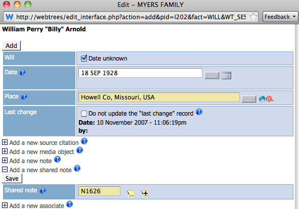
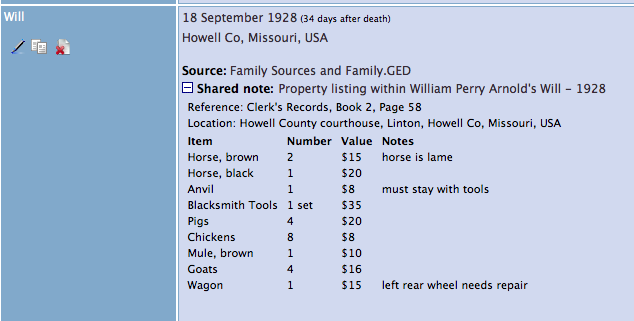

Census Assistant module
Contents
Purpose
This tool allows you to add all the details from any (currently only US, UK or France) census page to ALL the people listed on it (providing they exist in your GEDCOM file) in ONE process. It includes tools to help find the relevant individuals, and presents the results in an easy to read, formatted, shared-note, containing all of the key facts from the original census page.
Here is an example of the completed display:
{kind=link}
How to Use
Initial Steps
To add census data, start from any individual shown on the census page for the household, select Census[CENS] from the Add new fact drop-down at the bottom of the page, then click Add. [Ideally you would start with the 'Head' of the household, but it is not essential]
This will open a Census edit pop-up window
{kind=link}
From here, the first steps are:
- Enter the date of the census, either directly in the Date field, or by using the Census Date drop-down to select the census you are entering. This will automatically enter the correct date in the Date field.
- Enter any other details you require, such as Place, Address, or add a media item if you want one at this level.
Very important: Only enter data here that can be common to all the individuals on the census page / household. So do not enter Age for a single individual otherwise later in the process that age will be copied to all the other individuals.
Next add a Source Citation for this event, by clicking on the Add a new Source Citation option and entering the appropriate details.
At this point there are two options for adding the Shared Note containing the census details:
- By clicking on Shared Note using Assistant within the Source details area. This will add the census details as a note to the Source record
- By clicking on Add a new Shared Note below the Source details area, then clicking on the Shared Note using Assistant in this area. This will add a shared note at the same level as the Source. [This is the option chosen for the finished example shown above here]
Whichever you choose, Shared Note using Assistant opens the Census Assistant window, a large pop-up. It contains 6 areas of information, which are briefly described here. Detailed instructions for each area will follow below using these numbers as the key. You can see that much of the information already entered has been retained here, so no re-typing is required.
{kind=link}
- Header information. This identifies the person you started the process from as the "Head"
- Summary Information input, where you will enter the key information from the census page related to the whole page.
- Person list and search. This presents the person from the header area ("1") plus their close relatives, and a Search option if required
- Census data input. This area will be populated later with the line entries for each individual shown on the census page
- Shared Note preview panel. This area will display the actual GEDCOM data that will be stored in the shared note record once you complete all steps.
- Preview, Save, and Help options
Area 1 - Header information
It is important to identify the correct person in this information. The name is used in the title of the shared note (area 2), and will, if not edited later, be identified as the Head of the household on the individual details later (area 4).
If you need to change this person, select someone else from the list in area 3, and click on the small "head" icon beside their name. The screen will refresh, with that new person shown in area 1.
{kind=link}
Area 2 - Summary information
This is where you can enter information related to the whole census page.
The items "Country" and "Year" are mandatory, but will generally be filled in automatically from the entries you made on the previous window. They can be changed here though if you want to. You must select the country of the census (currently only UK, USA, or France are available as templated choices), and the year of the census before any other data can be entered. These are also added in front of the text in the Title box to create the title of the shared note. The Title text can be manually edited here if you want.
{kind=link}
The fields, Reference, Locality, and Notes are also optional, and are simple text entry fields. You can add any appropriate text of your own or from the original census pages here, or leave blank if you prefer.
At this point you can click on Preview in area 6 to see how the inputs made so far will appear in the GEDCOM NOTE record, displayed in area 5.
Area 3 - Person List and Search
This area is based on the Family Navigator pane shown on Individual pages of webtrees. It lists close relatives of the person set as Head here (marked with a tick). It is designed to include those people most likely to be needed for this census record.
{kind=link}
Its use is very simple. Following the order of people listed on the original census page, click on each name in turn. As each name is clicked, their details will be transferred to the Data Input area 4, including any pieces of information that can be deduced automatically at this time.
Once all the required people have been added to area 4, the whole window will look like the example below.
{kind=link}
Area 4 - Census Data Input
{kind=link}
[Note: on your screen you will see scroll bars, needed to view the full width or height of this area. This is necessary to accommodate large numbers of columns found in census pages in some years, and for large households, while still fitting a pop-up window on most screen sizes.]
The next steps are to:
- Manually change any of the deduced information displayed (shown here in blue), such as age, marital condition (MC) to match exactly the contents of the original census page
- Enter data in the remaining fields, copying them from the original page.
Other things to know about this area:
- To know what each of the short header titles, such as FBP actually mean hover your mouse over them to read a tool tip brief explanation. These change according to the Country / Year census chosen in area 2, and will correspond to columns of data on the original census. The same tool tips are also available on the finished presentation in webtrees.
- Above the table is an Add/Insert Blank Row button. This is connected to the Add marker on the right of the area. While Add is marked, the button will add a new, blank row at the bottom of the list. If you click on any marker under the Ins field at the right, the same button will insert a row above the person chosen. These blank rows enable you to add information about people NOT recorded in your GEDCOM file, but present on the census page.
- Click on the X to the right of any data row to delete that row from the list. You can put it back, or in another position by setting an Ins marker then clicking a name from area 3 again.
Finishing
When all the data in area 4 is as correct as you want it to be, click on Preview in area 6 for a final review of the output, which will look like this:
{kind=link}
If all is well:
- Click on Save (area 6).
- You will see another window, confirming the INDI numbers the event is about to be saved to, for information only.
- Click on Paste the following ID into your editing fields to reference the newly created record N1.
- You will now be back to the original Add Census window.
- Make a final check that all entries are complete and correct.
- Click on any of the Save buttons, then Close window to finalise the operation.
Unless you have auto approve changes set to Yes in your GEDCOM configuration, you will now need to accept (approve) each of these changes in webtrees. Once that is complete, ALL of the individuals added to area "4" will now have a CENS event much like the one shown at the start of this article.
Manual Input
Sometimes templates or the data sets you wish to format do not exist within the current version of this module. The really neat thing is the Shared Note formatting can be applied to any set of data points, including census data for countries other than UK, USA, or France (such as Canadian, Poland, German, ...) as well as other data you may wish to present in columnar-like table format.
To use this manual entry concept for a different census, simply create a CENS event by clicking on Add New, complete the portions of the GUI pop-up form that apply to your event, and then click on Add a new Shared Note. As is shown in the raw code just above, the first line of the Shared Note is your title for the NOTE. You may enter other pertinent, note-like information and then begin to create your table by adding the phrase: .start_formatted_area.
The next line you enter will serve as the header for your table-formatted data and you will probably wish to have these terms reflected in bold type, so use the bolding code (.b.) to proceed each term you desire for column heads. Again, use the screencap just above as an example, but the data can be anything you wish. Let's say, instead of a Census event, you wished to record a transcription of a will's property listing. Your data entry would look like this:
1. The Shared Note raw code entered to create a formatted table property listing

2. The Will event pop-up window showing the created Shsred Note added to the record. 
{kind=link}
3. The individual personal page, showing the event and the formatted property listing we created with a free-hand Shared Note. 
{kind=link}
Obviously, you can apply this same manual formatting technique to your own country's Census records for transcription and presentation. You are only limited by your own creativity on what data to enter into this table-like display format.
Note that whereas the Census Assistant automatically adds the Shared note to all the individuals listed in the census record, with the manual entry method this will have to be done manually as well.
Known Issues
- This module has only limited census templates. At present are: UK census from 1841 to 1911; US Census from 1790 to 1940; and French census from 1876 to 1951.
- During input the code attempts to add married women using their married names. To do this those individuals must have married names recorded, and they must be recorded using the _MARNM tag. Where a married name does not exist the maiden name will be used EXCEPT in cases of multiple marriages. Then if one (only) wife has a married name, her name will be used for all wives. Clearly a bug, but one too complex to fix in the immediate future.